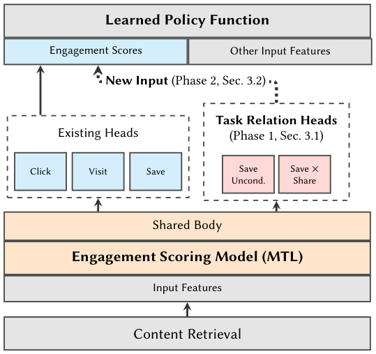

Learned Cross-Task Relationships in Multi-Task Models (多任务模型中的跨任务关系学习)
- 会议/期刊: RecSys 2026 (20th ACM Conference on Recommender Systems)
- 作者与机构: Victor Zhang, Yiping Yuan, Florian Raudies, Bosun Adeoti, Brian Y. C. Leung, Sanjay Surendranath Girija, Naijing Zhang (Google / YouTube)
- 推荐链路定位: 精排（用户参与度多任务打分模型，作为 RL 策略的状态输入）
- 研究方向: 多任务学习与列表级重排 / 强化学习与动态探索推荐
- 论文原文: https://arxiv.org/abs/2609.28776v2
- 开源代码: 暂未开源
TL;DR (1分钟核心速览)
标准 MTL 只优化各任务的边缘损失 \(\sum\lambda_i \mathcal{L}_{\text{BCE}}(y_i,\hat p_i)\)，共享表征虽隐式含跨任务信息，但输出端仅剩 \(O(N)\) 的边缘概率，丢弃了 \(O(2^N)\) 联合结构。本文提出按需添加辅助头：对无条件任务对加交叉标签头 \(E[XY]\)，对条件任务对加无条件头 \(E[Y]\)，用至多 \(O(N^2)\) 个头即可解析还原完整两两联合分布（协方差 \(=\mathbb{E}[XY]-\mathbb{E}[X]\mathbb{E}[Y]\)）。在 YouTube Notifications / Homepage / Watch Next 三个十亿级场景的线上 A/B 中，Notifications 组合臂取得 DAU +0.17%、CTR +7.67%、退订 −1.05% 的显著收益。
Background & Motivation (背景与核心矛盾)
- 主流范式: 工业推荐普遍采用共享底座 + 多任务头的 MTL（MMoE/PLE 类门控），以加权和边缘损失训练，输出各行为的独立概率作为 RL 策略的状态特征。
- 前人局限: ① 辅助头工作（如 YouTube 分位数多头）只预测补充任务的边缘概率，用于隐式丰富共享表征，从不显式量化任务间关系；② ESMM/AITM 用概率链式法则处理嵌套/序贯任务，但未覆盖非嵌套任务对的协方差结构；③ 梯度手术类方法（PCGrad 等）在反传后干预梯度，属"事后修补"。
- 核心洞察 (Key Insight): 训练标签采样自联合分布，模型却只输出边缘分布——两者之差恰是协方差。只要凑齐 \(\mathbb{E}[X],\mathbb{E}[Y],\mathbb{E}[XY]\) 三项，即可由线性期望解析出全部四种联合状态，无需 \(O(2^N)\) 全联合建模。
- 本文切入点: 不改标签定义、不动主干，仅策略性增补辅助头把缺失的那一项补上，让共享表征被迫编码任务交互特征。
Method (核心方法设计)
1. 整体框架 (Overall Architecture)
输入特征经共享底座（shared body）产出隐表征，分发给既有任务头（click/save/like 等）与新增的任务关系头（交叉标签头 \(XY\) 或无条件头 \(Y\)）。关系头与既有头同时训练、共享梯度通路，其输出在 Phase 1 被抑制（仅测迁移），在 Phase 2 作为 RL 策略函数的额外输入特征。整个流程配套"任务对筛选 → 离线 AUC → 两阶段线上实验 → 迭代精化"的工作流模板。
flowchart TD
A["输入特征"] --> B["共享底座 Shared Body"]
B --> C["既有任务头 X, Y"]
B --> D["任务关系头 XY / 无条件 Y"]
C --> E["边缘概率 E[X], E[Y]"]
D --> F["联合项 E[XY]"]
E --> G["RL 策略函数 (Phase 2 输入)"]
F --> G
2. 关键设计拆解 (Key Designs)
-
交叉标签头（Cross-Label Head）：针对两个无条件任务 \(X,Y\)，标准损失 \(\mathcal{L}_{\text{standard}}=\lambda_x\mathcal{L}_{\text{BCE}}(y_x,\hat p_x)+\lambda_y\mathcal{L}_{\text{BCE}}(y_y,\hat p_y)\) 对 \(X,Y\) 交互零惩罚。本文加一头预测 \(y_{xy}=y_x\cdot y_y\)（逻辑与），总目标 $\(\mathcal{L}_{\text{total}}=\mathcal{L}_{\text{standard}}+\lambda_{xy}\mathcal{L}_{\text{BCE}}(y_{xy},\hat p_{xy})\)$ 其梯度 \(\nabla_\theta\mathcal{L}_{xy}\) 只作用于两任务同时为正的样本子集，与全局缩放损失权重有本质区别——后者均匀放大所有正例，前者精准聚焦交集，从而把"长观看"与"长观看+点赞"在隐空间中区分开。
-
无条件头（Unconditioned Head）：针对条件任务对（如 \(P(\text{save}\mid\text{click})\)，训练时屏蔽 click 负例），联合项可由 \(\mathbb{E}[XY]=\mathbb{E}[Y\mid X]\mathbb{E}[X]\) 得到，缺的是 \(\mathbb{E}[Y]\)。补一个在全量样本上训练的无条件头即可。这一信号无法通过调大条件头损失权重复现，因为条件头根本不接触 \(X\) 为负的样本。
-
联合分布解析还原与训练/推理开销：由 \(\neg X=1-X\) 与期望线性性，四种状态全部可由三项导出，例如 \(\mathbb{E}[X(\neg Y)]=\mathbb{E}[X]-\mathbb{E}[XY]\)、\(\mathbb{E}[(\neg X)(\neg Y)]=1-\mathbb{E}[X]-\mathbb{E}[Y]+\mathbb{E}[XY]\)。故补 1 个头即等价于完整两两联合分布，复杂度从 \(O(2^N)\) 降至 \(O(N^2)\)。训练用标准 BCE、无额外负采样；推理仅多若干小头的前向，开销可忽略。任务对筛选规则：嵌套任务（\(Y\subseteq X\)）交叉标签退化为 \(Y\)，互斥任务（open×dismiss）恒为 0，链式法则可导出的无条件项冗余——三类均剔除。
Experimental Setup & Evaluation Protocol (实验设置与评估协议)
- 数据集与预处理: 工业私有数据，无公开统计表。每日产生数十亿级训练样本，每个模型消费数周时间窗数据，评估集占 1%。
| 场景 | 训练规模 | 评估集 | 场景特点 |
|---|---|---|---|
| Notifications | 十亿级/日 | 1% 留出 | 归因困难、用户状态差异大，基线 AUC 偏低、置信区间宽 |
| Homepage | 十亿级/日 | 1% 留出 | 高意图、信号干净，MTL 模型最大、头数最多 |
| Watch Next | 十亿级/日 | 1% 留出 | 以当前视频为上下文，需跨全 YouTube 度量 |
- 数据划分与防穿越 (Splitting Strategy): 时间窗切分（数周训练窗 + 1% 留出评估集），线上实验为互斥分流 A/B。
- 排名评测协议 (Ranking Protocol): 离线采用留出集 AUC（逐头评估，非全库排序指标）；线上采用十亿级用户的分流 A/B，报告指标相对变化及 95% CI。
- 对比基线与超参设置: 基线为同架构但不含关系头的生产 MTL 模型（非学术 SOTA 复现）。三臂设计：control / 仅训练（Phase 1 迁移）/ 训练+服务（Phase 2 环境建模）。显著性以 95% CI 不含 0 为准。
Key Experimental Results (实验关键数据)
1. 主实验对比 (Main Results)
| 场景 / 阶段 | 辅助头配置 | 离线 AUC 影响 | 线上核心指标 [95% CI] |
|---|---|---|---|
| Notifications（组合臂） | 10 头：\(D\times V\) 交叉标签（Open/Dismissal × Visits） | 直接交互头 \(D\) +3~8%；环境活动头 \(V\) 中性 | DAU +0.17% [+0.01,+0.32]；Valued watch time +0.19%；Opt-outs −1.05%；Sends −7.21%；CTR +7.67% |
| Homepage Phase 1 | 5 个无条件头（Watch Time Ratio、Save、Like、Subscribe、Inline Playback） | 主任务 +0.2~0.5%；scroll/share 轻微回退 | Valued watch time +0.05%；Shorts engagement +0.10%；Low quality impressions −0.24% |
| Homepage Phase 2 | 7 头：Share(uncond.)、Download(cond.) + 5 个 Save×Action | share/download +1~2%；like/dislike ≈ −0.5% | Valued watch time +0.05%；Shorts engagement +0.06%；Low quality impressions −0.16% |
| Homepage Phase 3 | 11 头（无条件+条件+交叉标签终选集） | 基线已含 MTL 改动，不单列 | Home engagement +0.03%；Shorts engagement +0.10%；Low quality impressions −0.64% |
| Watch Next Phase 1 | 4 个无条件变体头（Continuation、Like、Dislike、Subscribe） | 原服务头 +0.2~2.6%；CTR +0.25%、Bad Watch +0.22% | Watch Next Valued Watch Time +0.19%；全局 Valued watch time +0.08%；Low quality impressions −0.42% |
2. 消融实验 (Ablation Study)
| 消融/对照设置 | 对比对象 | 关键结果 |
|---|---|---|
| 复制既有头 / 调大既有头损失权重 | vs. 新增交叉标签头 | 无任何实验证据表明有提升 |
| Path 1：交叉头接变体塔顶层（图 6） | vs. Path 2 | 显著劣于 Path 2 |
| Path 2：交叉头直连共享事件底座（图 7） | vs. Path 1 | 类不平衡/稀疏标签任务 AUC +0.6%~4% |
| Phase 1 仅训练不服务 | vs. control | 线上指标已显著为正（纯迁移收益） |
| Phase 2 服务给 RL 策略 | vs. Phase 1 | 增量收益较小但方向一致（环境建模收益） |
3. 关键实验发现 (Key Findings)
- 迁移收益是主贡献，环境建模是增量：Homepage Phase 1 仅加 5 个被动头（不服务）即带来 Valued watch time +0.05%、低质曝光 −0.24%；Phase 3 把 11 个头喂给 RL 策略后，低质曝光进一步降至 −0.64%，说明"更丰富的状态表征"确有独立价值，但幅度小于迁移本身。
- 梯度路径决定成败：在变体塔架构下，交叉头直连共享底座（Path 2）比经变体塔（Path 1）在稀疏/不平衡标签上高出 0.6%~4% AUC，印证变体塔会"过滤"掉跨任务梯度，辅助头应直接正则化共享底座。
- 收益非均匀，需按对筛选：Notifications 中直接交互头 \(D\) 提升 3~8% 而环境活动头 \(V\) 中性；Homepage 中 share/download 提升 1~2% 但 like/dislike 回退约 0.5%。作者强调 0.1% 量级在十亿用户下即为统计显著的绝对影响，且线上所有实验均为"参与度与满意度同向改善"，属操作点扩张而非权衡。
Highlights, Limitations & Rating (亮点、对比与审稿评价)
- 与代表作对比 (vs. Prior Work): 与 MMoE/PLE 的本质区别在于后者靠门控改善共享表征但仍用独立边缘损失；与 ESMM/AITM 的区别在于后者只处理嵌套序贯任务的链式分解，本文用交叉标签头覆盖任意非嵌套任务对并显式估计协方差；与 PCGrad 等梯度手术的区别在于本文结构性预防梯度稀释（交叉头天然产生对齐两任务的统一梯度），而非事后投影。
- 可迁移亮点: ① "缺哪项补哪项"的辅助头选择决策树（图 4）可直接套用到任何 MTL 排序模型；② 两阶段线上实验设计（先抑制输出测迁移、再放开测状态增强）是工业界分离混杂因素的干净范式。
- 审稿级局限批判: ① 全部为私有数据与私有指标，无公开基准复现，学术可比性弱；② 辅助头选择仍依赖人工试错与多轮迭代，作者自认缺乏自动化原则；③ 离线 AUC 与线上收益相关性不稳定（部分头中性甚至回退），离线筛选的指导力有限。
- 四维评分: 创新性 ⭐⭐⭐⭐ | 实验扎实度 ⭐⭐⭐⭐ | 方法清晰度 ⭐⭐⭐⭐⭐ | 落地价值 ⭐⭐⭐⭐⭐